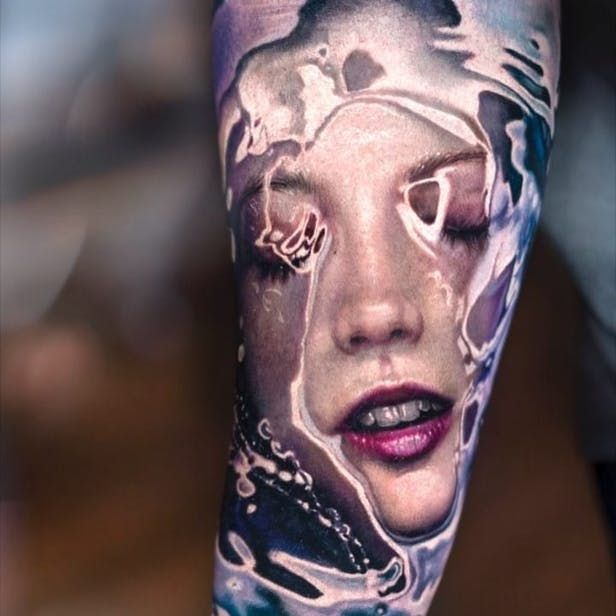
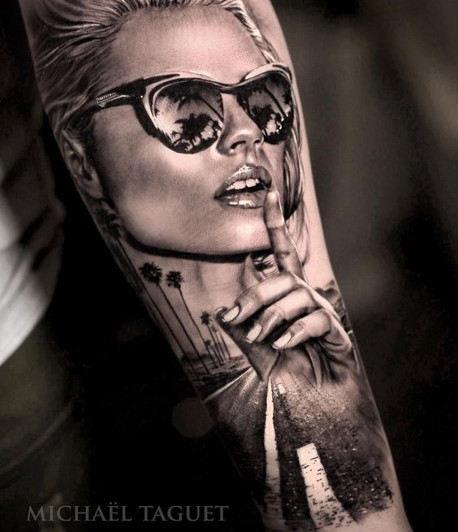

A great movement of realism within art began throughout the High Renaissance of the 1500s. Michelangelo, Da
Vinci, Rembrandt, and Titian set the bar high for contemporary artists, who used techniques like measuring
facial characteristics, perspective, and the Camera Obscura to represent life as closely as possible to the
truth. Later, during the 19th century Realism movement, artists like Courbet and Millet looked to the Old
Masters for techniques and tools, but they also adopted new concepts in order to produce inclusive pictures of
actual life. Many Realism tattooists still look to the Old Masters for inspiration and subject matter, but it
wasn't until the development of the camera that the realistic approach in the arts truly took off.
Though classic realism has been a component of fine art since the Renaissance, it was only recently introduced
to the world of tattooing, appearing in the later half of the twentieth century. Since then, this new tattoo
style has grown in sophistication and popularity. Currently, you can get jaw-dropping color and black-and-white
photos of just about any celebrity you can think of, as well as accurate renderings of nature and just about
anything else.
One of the main ways to create realism tattoos is shadow mapping. If you closely observe realistic tattoos or
observed stencil placement, you'll probably notice shaded areas like topographic maps and contour lines that
outline highlights. These are just two ways an artist can prepare to create a work in this style, similar to a
photo source that is normally tapped in a tattoo artist's workspace. There is also an ink setting. Like the
color wheel, hues are often held together for blending to facilitate application to the skin and improve the
accuracy of color matching. There are many ways a realistic tattoo artist can work, but what is absolutely
certain is that this particular style requires a lot of skill and technical training, as well as a lot of
advance planning.